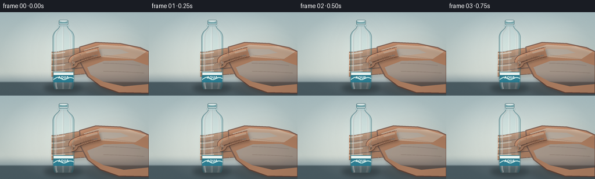
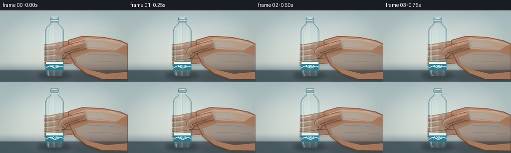
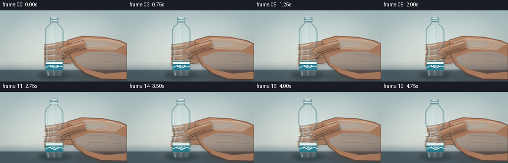
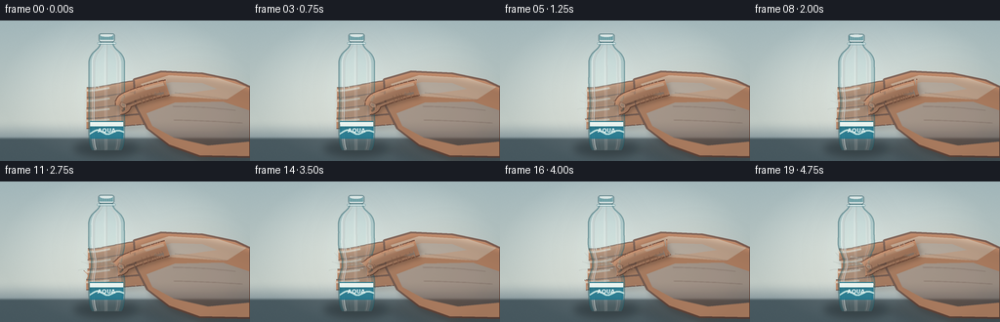
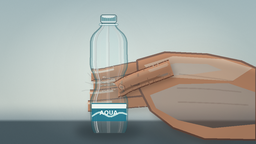
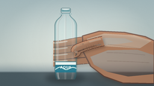
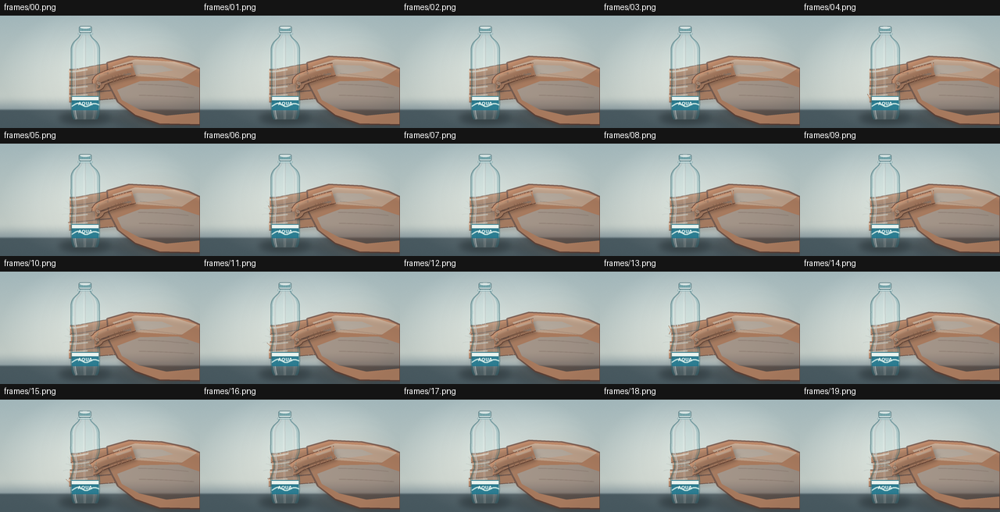
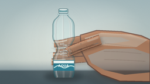

CODING AGENTS AS PIXEL WORLD MODELS
traex/DeepSeek-V4.1-Flash · mechanics_0017
点击播放 · 原生 RGB 像素
逐轮保存的候选
回放视频、检查图与代码变化。
每份候选均可单独播放。实际图片检查记录在下方工具轨迹中。
候选 01播放与检查图
点击播放 · 原生 RGB 像素


展开代码变化
--- 上一保存版本
+++ 本次保存版本
@@ -0,0 +1,502 @@
+from pathlib import Path
+
+import numpy as np
+from PIL import Image, ImageDraw, ImageFilter, ImageFont
+
+import artifact_io
+
+
+W, H = 256, 144
+S = 4
+FPS = 4
+FRAME_COUNT = 20
+
+
+def sc(points):
+ return [(float(x) * S, float(y) * S) for x, y in points]
+
+
+def smoothstep(x):
+ x = np.clip(x, 0.0, 1.0)
+ return x * x * (3.0 - 2.0 * x)
+
+
+def make_background():
+ width, height = W * S, H * S
+ yy, xx = np.mgrid[0:height, 0:width].astype(np.float32)
+ y = yy / (height - 1)
+ x = xx / (width - 1)
+
+ top = np.array([181, 199, 202], dtype=np.float32)
+ mid = np.array([214, 220, 213], dtype=np.float32)
+ lower = np.array([151, 166, 171], dtype=np.float32)
+
+ t = np.clip(y / 0.78, 0.0, 1.0)[..., None]
+ rgb = top * (1.0 - t) + mid * t
+ lower_mix = smoothstep((y - 0.70) / 0.18)[..., None]
+ rgb = rgb * (1.0 - lower_mix) + lower * lower_mix
+
+ table_mix = smoothstep((y - 0.825) / 0.025)[..., None]
+ table_color = np.stack(
+ [
+ np.full_like(y, 91.0) + 11.0 * (1.0 - y),
+ np.full_like(y, 105.0) + 10.0 * (1.0 - y),
+ np.full_like(y, 111.0) + 8.0 * (1.0 - y),
+ ],
+ axis=-1,
+ )
+ rgb = rgb * (1.0 - table_mix) + table_color * table_mix
+
+ spot = np.exp(-(((x - 0.40) / 0.38) ** 2 + ((y - 0.42) / 0.46) ** 2) * 1.7)
+ rgb += spot[..., None] * np.array([16.0, 13.0, 10.0], dtype=np.float32)
+
+ rim = np.exp(-(((x - 0.78) / 0.22) ** 2 + ((y - 0.31) / 0.38) ** 2) * 2.0)
+ rgb += rim[..., None] * np.array([8.0, 6.0, 4.0], dtype=np.float32)
+
+ vignette = np.clip(((x - 0.5) ** 2 / 0.25 + (y - 0.49) ** 2 / 0.31), 0.0, 1.0)
+ rgb -= vignette[..., None] * np.array([21.0, 18.0, 17.0], dtype=np.float32)
+
+ rng = np.random.default_rng(17)
+ grain = rng.normal(0.0, 1.25, (height, width, 1)).astype(np.float32)
+ rgb += grain
+ rgb = np.clip(rgb, 0, 255).astype(np.uint8)
+ return Image.fromarray(rgb, "RGB")
+
+
+def catmull_rom(points, samples_per_segment=10):
+ pts = np.asarray(points, dtype=np.float32)
+ if len(pts) < 2:
+ return pts
+ padded = np.vstack([pts[0], pts, pts[-1]])
+ out = []
+ for i in range(1, len(padded) - 2):
+ p0, p1, p2, p3 = padded[i - 1], padded[i], padded[i + 1], padded[i + 2]
+ for t in np.linspace(0.0, 1.0, samples_per_segment, endpoint=False):
+ t2, t3 = t * t, t * t * t
+ point = 0.5 * (
+ (2.0 * p1)
+ + (-p0 + p2) * t
+ + (2.0 * p0 - 5.0 * p1 + 4.0 * p2 - p3) * t2
+ + (-p0 + 3.0 * p1 - 3.0 * p2 + p3) * t3
+ )
+ out.append(point)
+ out.append(pts[-1])
+ return np.asarray(out)
+
+
+def draw_polygon(layer, points, fill, outline=None, width=1.0):
+ draw = ImageDraw.Draw(layer, "RGBA")
+ draw.polygon(sc(points), fill=fill)
+ if outline is not None:
+ draw.line(sc(points + [points[0]]), fill=outline, width=max(1, round(width * S)), joint="curve")
+
+
+def draw_capsule(layer, points, width, fill, outline=None, outline_width=None):
+ pts = catmull_rom(points, 12)
+ draw = ImageDraw.Draw(layer, "RGBA")
+ if outline is not None:
+ ow = width + (outline_width if outline_width is not None else 2.0)
+ draw.line(
+ [(float(x) * S, float(y) * S) for x, y in pts],
+ fill=outline,
+ width=max(1, round(ow * S)),
+ joint="curve",
+ )
+ draw.line(
+ [(float(x) * S, float(y) * S) for x, y in pts],
+ fill=fill,
+ width=max(1, round(width * S)),
+ joint="curve",
+ )
+ return pts
+
+
+def get_font(size):
+ candidates = [
+ "/usr/share/fonts/truetype/dejavu/DejaVuSans-Bold.ttf",
+ "/usr/share/fonts/truetype/liberation2/LiberationSans-Bold.ttf",
+ ]
+ for path in candidates:
+ if Path(path).exists():
+ return ImageFont.truetype(path, size)
+ return ImageFont.load_default()
+
+
+def bottle_geometry(p, index):
+ top = 13.2 + 1.25 * p
+ base = 132.2
+ y = np.linspace(top + 8.5, base, 520)
+
+ knots_y = np.array([22.0, 25.0, 28.0, 31.0, 34.0, 38.0, 42.0, 116.0, 122.0, 127.0, 130.5, 132.2])
+ knots_w = np.array([6.1, 6.8, 8.5, 11.8, 15.0, 17.3, 18.3, 18.3, 18.0, 17.2, 16.1, 15.0])
+ half = np.interp(y, knots_y, knots_w)
+
+ kernel = np.ones(13, dtype=np.float32) / 13.0
+ half = np.convolve(np.pad(half, (6, 6), mode="edge"), kernel, mode="valid")
+
+ grip = np.exp(-((y - 83.5) / 13.2) ** 2)
+ upper_bulge = np.exp(-((y - 66.5) / 7.5) ** 2)
+ lower_bulge = np.exp(-((y - 100.0) / 8.5) ** 2)
+ ripple = np.cos((y - 84.0) * 0.82) * grip
+ half *= 1.0 - 0.295 * p * grip + 0.055 * p * (upper_bulge + lower_bulge)
+ half *= 1.0 + 0.017 * p * ripple
+
+ effort = 0.12 * np.sin(index * 0.67) * p
+ center = 109.2 - 0.85 * p * ((base - y) / (base - top)) + effort
+ left = center - half
+ right = center + half
+ return y, left, right, center, top, base
+
+
+def body_width_at(y_query, geom):
+ y, left, right, center, top, base = geom
+ return float(np.interp(y_query, y, left)), float(np.interp(y_query, y, right)), float(
+ np.interp(y_query, y, center)
+ )
+
+
+def add_background_shadows(canvas, p):
+ shadow = Image.new("RGBA", canvas.size, (0, 0, 0, 0))
+ d = ImageDraw.Draw(shadow, "RGBA")
+ d.ellipse(sc([(76, 123), (144, 139)]), fill=(21, 31, 35, 105))
+ d.ellipse(sc([(87, 127), (132, 137)]), fill=(22, 27, 28, 115))
+ d.ellipse(sc([(142, 122), (233, 142)]), fill=(37, 36, 35, 55))
+ shadow = shadow.filter(ImageFilter.GaussianBlur(4.0 * S))
+ canvas.alpha_composite(shadow)
+
+
+def draw_back_hand(canvas, geom, p):
+ hand = Image.new("RGBA", canvas.size, (0, 0, 0, 0))
+ shadow = Image.new("RGBA", canvas.size, (0, 0, 0, 0))
+
+ skin_mid = (198, 143, 110, 255)
+ skin_dark = (103, 61, 47, 190)
+ skin_light = (236, 181, 143, 155)
+
+ # Fingers curl behind the bottle. Their tips are placed against the moving left contour.
+ for i in range(4):
+ y_tip = 74.5 + 10.4 * i + 0.4 * p
+ left, _, _ = body_width_at(y_tip, geom)
+ tip_x = left - 2.2
+ base_y = 65.0 + 11.4 * i
+ points = [
+ (179.0 + 2.0 * i, base_y),
+ (156.0 + 1.0 * i, base_y + 1.5),
+ (133.0 + 0.3 * i, base_y + 3.2),
+ (left + 9.0, y_tip - 0.5),
+ (tip_x, y_tip),
+ ]
+ width = 10.8 - 0.4 * i
+ draw_capsule(shadow, [(x + 2.0, y + 4.0) for x, y in points], width + 2.0, (32, 25, 22, 55))
+ draw_capsule(hand, points, width, skin_mid, outline=skin_dark, outline_width=2.0)
+
+ tip_pts = catmull_rom(points, 12)
+ highlight = [(x - 0.8, y - 2.6) for x, y in tip_pts[-18:]]
+ if len(highlight) > 2:
+ draw_capsule(hand, highlight, 2.1, (242, 187, 151, 120))
+
+ palm = [
+ (137.0, 60.0),
+ (165.0, 52.0),
+ (207.0, 54.0),
+ (241.0, 61.0),
+ (256.0, 68.0),
+ (256.0, 140.0),
+ (204.0, 139.0),
+ (173.0, 128.0),
+ (151.0, 111.0),
+ (139.0, 88.0),
+ ]
+ draw_polygon(shadow, [(x + 3.0, y + 5.0) for x, y in palm], (32, 25, 22, 55))
+ draw_polygon(hand, palm, skin_mid, outline=skin_dark, width=2.1)
+
+ # Broad plane changes across the back of the hand.
+ draw_polygon(hand, [(144, 65), (173, 56), (223, 59), (252, 68), (232, 81), (184, 78), (153, 76)], skin_light)
+ draw_polygon(hand, [(150, 95), (179, 84), (228, 83), (255, 92), (255, 124), (213, 128), (178, 120), (156, 108)], (147, 90, 68, 75))
+ draw_polygon(hand, [(148, 70), (176, 63), (207, 64), (222, 70), (194, 74), (164, 76)], (237, 184, 150, 65))
+
+ # Knuckle and tendon lines, kept soft at the final resolution.
+ lines = Image.new("RGBA", canvas.size, (0, 0, 0, 0))
+ dl = ImageDraw.Draw(lines, "RGBA")
+ for i, pts in enumerate(
+ [
+ [(179, 74), (204, 77), (233, 81)],
+ [(177, 88), (207, 89), (241, 92)],
+ [(178, 102), (211, 103), (248, 105)],
+ ]
+ ):
+ curve = catmull_rom(pts, 12)
+ dl.line([(float(x) * S, float(y) * S) for x, y in curve], fill=(105, 61, 47, 65), width=round(0.75 * S))
+ hand.alpha_composite(lines.filter(ImageFilter.GaussianBlur(0.35 * S)))
+
+ hand.alpha_composite(shadow.filter(ImageFilter.GaussianBlur(2.5 * S)))
+ canvas.alpha_composite(hand)
+
+
+def draw_bottle(canvas, geom, p, index):
+ y, left, right, center, top, base = geom
+ body = Image.new("RGBA", canvas.size, (0, 0, 0, 0))
+ bd = ImageDraw.Draw(body, "RGBA")
+
+ for yi, xl, xr in zip(y, left, right):
+ span = xr - xl
+ segments = [
+ (0.00, 0.075, (71, 142, 153, 72)),
+ (0.075, 0.16, (236, 252, 252, 86)),
+ (0.16, 0.43, (193, 233, 237, 38)),
+ (0.43, 0.53, (237, 251, 250, 58)),
+ (0.53, 0.77, (171, 220, 226, 36)),
+ (0.77, 0.91, (230, 248, 247, 42)),
+ (0.91, 1.00, (73, 147, 159, 63)),
+ ]
+ yy = round(float(yi) * S)
+ for a, b, color in segments:
+ x0 = round((xl + span * a) * S)
+ x1 = max(x0 + 1, round((xl + span * b) * S))
+ bd.line((x0, yy, x1, yy), fill=color, width=S)
+
+ # Faint internal contours suggest the rear wall of the clear bottle.
+ for frac, alpha in [(0.12, 28), (0.27, 16), (0.84, 24)]:
+ inner = [(float(xl + (xr - xl) * frac), float(yi)) for yi, xl, xr in zip(y[::3], left[::3], right[::3])]
+ bd.line(sc(inner), fill=(242, 255, 255, alpha), width=max(1, round(0.55 * S)), joint="curve")
+
+ canvas.alpha_composite(body)
+
+ # Body outline, split into a dark refractive edge and a bright inner glint.
+ contour = Image.new("RGBA", canvas.size, (0, 0, 0, 0))
+ cd = ImageDraw.Draw(contour, "RGBA")
+ left_pts = list(zip(left, y))
+ right_pts = list(zip(right, y))
+ cd.line(sc(left_pts), fill=(34, 96, 108, 132), width=max(1, round(0.95 * S)), joint="curve")
+ cd.line(sc(right_pts), fill=(37, 104, 116, 120), width=max(1, round(0.95 * S)), joint="curve")
+ contour = contour.filter(ImageFilter.GaussianBlur(0.18 * S))
+
+ glints = Image.new("RGBA", canvas.size, (0, 0, 0, 0))
+ gd = ImageDraw.Draw(glints, "RGBA")
+ for frac, width, alpha in [(0.145, 0.9, 195), (0.505, 0.55, 118), (0.825, 0.7, 82)]:
+ pts = [(float(xl + (xr - xl) * frac), float(yi)) for yi, xl, xr in zip(y, left, right)]
+ gd.line(sc(pts), fill=(249, 255, 255, alpha), width=max(1, round(width * S)), joint="curve")
+ glints = glints.filter(ImageFilter.GaussianBlur(0.28 * S))
+ canvas.alpha_composite(contour)
+ canvas.alpha_composite(glints)
+
+ draw_cap_and_neck(canvas, geom, p)
+ draw_label(canvas, geom, p)
+ draw_creases(canvas, geom, p)
+
+
+def draw_cap_and_neck(canvas, geom, p):
+ y, left, right, center, top, base = geom
+ cx = float(center[0])
+ cap_w = 16.5
+ cap_h = 8.7
+ x0, x1 = cx - cap_w / 2.0, cx + cap_w / 2.0
+ cap = Image.new("RGBA", canvas.size, (0, 0, 0, 0))
+ cd = ImageDraw.Draw(cap, "RGBA")
+
+ cd.rounded_rectangle(
+ (x0 * S, top * S, x1 * S, (top + cap_h) * S),
+ radius=2.6 * S,
+ fill=(203, 218, 218, 255),
+ outline=(55, 95, 103, 190),
+ width=max(1, round(0.8 * S)),
+ )
+ cd.rectangle(
+ ((x0 + 1.1) * S, (top + 2.0) * S, (x1 - 1.1) * S, (top + 6.5) * S),
+ fill=(84, 145, 154, 210),
+ )
+ cd.ellipse(
+ ((x0 + 2.0) * S, (top + 0.8) * S, (x1 - 2.0) * S, (top + 3.5) * S),
+ fill=(236, 246, 244, 180),
+ )
+ for rib in np.linspace(x0 + 2.0, x1 - 2.0, 8):
+ cd.line(
+ (rib * S, (top + 1.8) * S, rib * S, (top + 7.6) * S),
+ fill=(225, 237, 235, 110),
+ width=max(1, round(0.35 * S)),
+ )
+ canvas.alpha_composite(cap)
+
+ neck = Image.new("RGBA", canvas.size, (0, 0, 0, 0))
+ nd = ImageDraw.Draw(neck, "RGBA")
+ neck_y = top + 9.0
+ nd.rounded_rectangle(
+ ((cx - 9.5) * S, neck_y * S, (cx + 9.5) * S, (neck_y + 2.0) * S),
+ radius=0.7 * S,
+ fill=(226, 242, 241, 210),
+ outline=(57, 116, 126, 150),
+ width=max(1, round(0.45 * S)),
+ )
+ canvas.alpha_composite(neck)
+
+
+def draw_label(canvas, geom, p):
+ y, left, right, center, top, base = geom
+ y0, y1 = 103.0, 121.0
+ ys = np.linspace(y0, y1, 60)
+ lefts = np.interp(ys, y, left) + 1.15
+ rights = np.interp(ys, y, right) - 1.15
+ poly = list(zip(lefts, ys)) + list(zip(rights[::-1], ys[::-1]))
+
+ label = Image.new("RGBA", canvas.size, (0, 0, 0, 0))
+ draw_polygon(label, poly, (231, 241, 237, 238))
+
+ # Colored center field with white rims.
+ center_poly = []
+ for yy, xl, xr in zip(ys, lefts, rights):
+ center_poly.append((xl, yy))
+ for yy, xl, xr in zip(ys[::-1], lefts[::-1], rights[::-1]):
+ center_poly.append((xr, yy))
+ draw_polygon(label, center_poly, (20, 113, 137, 218))
+
+ white_band = []
+ for yy, xl, xr in zip(np.linspace(104.0, 108.3, 20), np.interp(np.linspace(104.0, 108.3, 20), y, left) + 1.4, np.interp(np.linspace(104.0, 108.3, 20), y, right) - 1.4):
+ white_band.append((xl, yy))
+ for yy, xl, xr in zip(np.linspace(104.0, 108.3, 20)[::-1], np.interp(np.linspace(104.0, 108.3, 20), y, left)[::-1] + 1.4, np.interp(np.linspace(104.0, 108.3, 20), y, right)[::-1] - 1.4):
+ white_band.append((xr, yy))
+ draw_polygon(label, white_band, (238, 248, 244, 245))
+
+ # A light wave and tiny product lettering make the object read as a bottle label.
+ wave = catmull_rom([(92.0, 116.2), (100.0, 112.4), (110.0, 116.5), (120.0, 112.8), (127.0, 114.4)], 12)
+ draw_capsule(label, [(float(x), float(yv)) for x, yv in wave], 1.7, (198, 238, 235, 185))
+ font = get_font(round(5.7 * S))
+ draw = ImageDraw.Draw(label, "RGBA")
+ text = "AQUA"
+ bbox = draw.textbbox((0, 0), text, font=font)
+ tw = bbox[2] - bbox[0]
+ draw.text((((float(center[150]) - tw / (2 * S))) * S, 109.3 * S), text, font=font, fill=(238, 250, 247, 235))
+
+ outline = Image.new("RGBA", canvas.size, (0, 0, 0, 0))
+ od = ImageDraw.Draw(outline, "RGBA")
+ od.line(sc([(float(xl), y0) for xl in lefts] + [(float(xr), y0) for xr in rights]), fill=(255, 255, 255, 55), width=S)
+ canvas.alpha_composite(label)
+
+
+def draw_creases(canvas, geom, p):
+ y, left, right, center, top, base = geom
+ strength = float(np.clip((p - 0.16) / 0.84, 0.0, 1.0))
+ if strength <= 0.01:
+ return
+
+ crease = Image.new("RGBA", canvas.size, (0, 0, 0, 0))
+ cd = ImageDraw.Draw(crease, "RGBA")
+ alpha = int(28 + 122 * strength)
+ for k, (yc, phase, span) in enumerate([(78.0, 0.0, 0.22), (84.0, 1.8, 0.31), (90.0, 3.2, 0.24)]):
+ ys = np.linspace(yc - 1.8, yc + 1.8, 25)
+ xs = []
+ for yy in ys:
+ xl, xr, cx = body_width_at(yy, geom)
+ u = 0.50 + span * np.sin((yy - yc) * 1.65 + phase)
+ xs.append(xl + (xr - xl) * u)
+ pts = list(zip(xs, ys))
+ if k == 1:
+ cd.line(sc([(x, yv + 0.7) for x, yv in pts]), fill=(35, 99, 108, alpha // 2), width=max(1, round(0.7 * S)))
+ cd.line(sc(pts), fill=(246, 255, 253, alpha), width=max(1, round((0.45 + 0.35 * strength) * S)), joint="curve")
+
+ # Stress streaks radiate from the pinch at high pressure.
+ for side in (-1.0, 1.0):
+ for j in range(3):
+ yc = 80.0 + j * 5.0
+ xl, xr, cx = body_width_at(yc, geom)
+ edge = xl if side < 0 else xr
+ pts = [
+ (edge + side * 1.4, yc),
+ (edge + side * (5.0 + 2.0 * j), yc - 4.0 + 2.0 * j),
+ (edge + side * (8.0 + 2.3 * j), yc - 7.0 + 4.0 * j),
+ ]
+ cd.line(sc(pts), fill=(247, 255, 252, int(42 + 55 * strength)), width=max(1, round(0.35 * S)), joint="curve")
+
+ crease = crease.filter(ImageFilter.GaussianBlur(0.22 * S))
+ canvas.alpha_composite(crease)
+
+
+def draw_thumb(canvas, geom, p, index):
+ y, left, right, center, top, base = geom
+ y_tip = 88.5 + 0.4 * p
+ xl, xr, cx = body_width_at(y_tip, geom)
+ tip_x = xr - 4.2
+ start_y = 69.0 - 1.2 * p
+
+ shadow = Image.new("RGBA", canvas.size, (0, 0, 0, 0))
+ thumb = Image.new("RGBA", canvas.size, (0, 0, 0, 0))
+ skin_mid = (202, 146, 112, 255)
+ skin_dark = (99, 57, 43, 210)
+
+ centerline = [
+ (171.0, start_y),
+ (158.0, 72.0 + 0.6 * p),
+ (143.0, 76.5 + 1.4 * p),
+ (128.0, 82.5 + 1.4 * p),
+ (tip_x + 3.0, y_tip - 1.3),
+ (tip_x, y_tip),
+ ]
+ pts = catmull_rom(centerline, 16)
+ draw_capsule(shadow, [(x + 1.5, yv + 3.3) for x, yv in pts], 15.0, (31, 23, 20, 75))
+ draw_capsule(thumb, centerline, 15.6, skin_mid, outline=skin_dark, outline_width=2.0)
+
+ # Dorsal highlight and pad shading.
+ upper = [(x - 1.4, yv - 4.2) for x, yv in pts]
+ draw_capsule(thumb, upper[4:-18], 3.2, (242, 188, 150, 128))
+ lower = [(x + 0.5, yv + 4.5) for x, yv in pts]
+ draw_capsule(thumb, lower[6:-8], 2.2, (127, 73, 53, 70))
+
+ # Thumb nail, angled with the tip.
+ nail = [
+ (tip_x + 1.3, y_tip - 5.2),
+ (tip_x + 6.0, y_tip - 3.0),
+ (tip_x + 6.4, y_tip + 0.7),
+ (tip_x + 2.5, y_tip + 1.2),
+ (tip_x - 0.2, y_tip - 1.7),
+ ]
+ draw_polygon(thumb, nail, (232, 177, 143, 225), outline=(119, 72, 55, 135), width=0.45)
+ draw_polygon(thumb, [(tip_x + 2.0, y_tip - 3.4), (tip_x + 4.7, y_tip - 2.0), (tip_x + 4.3, y_tip - 0.3), (tip_x + 1.5, y_tip - 1.1)], (250, 206, 175, 135))
+
+ # Joint crease near the base of the thumb.
+ joint = catmull_rom([(160.0, 74.5), (155.0, 78.0), (153.0, 82.0)], 12)
+ draw = ImageDraw.Draw(thumb, "RGBA")
+ draw.line([(float(x) * S, float(yv) * S) for x, yv in joint], fill=(105, 59, 44, 75), width=max(1, round(0.55 * S)), joint="curve")
+
+ thumb.alpha_composite(shadow.filter(ImageFilter.GaussianBlur(2.2 * S)))
+ canvas.alpha_composite(thumb)
+
+
+def add_finishing(canvas, p, index):
+ # A very soft warm bounce on the right hand and a cool edge along the bottle.
+ glow = Image.new("RGBA", canvas.size, (0, 0, 0, 0))
+ gd = ImageDraw.Draw(glow, "RGBA")
+ gd.ellipse(sc([(139, 48), (259, 145)]), fill=(244, 170, 125, 18))
+ gd.ellipse(sc([(72, 14), (145, 135)]), fill=(194, 244, 247, 10))
+ glow = glow.filter(ImageFilter.GaussianBlur(12.0 * S))
+ canvas.alpha_composite(glow)
+
+ # Fine contact darkening where the thumb presses the plastic.
+ y, left, right, center, top, base = bottle_geometry(p, index)
+ y_tip = 88.5 + 0.4 * p
+ xl, xr, cx = body_width_at(y_tip, y * 0 + y, left, right, center, top, base) if False else (None, None, None)
+
+
+def render_frame(index):
+ t = index / (FRAME_COUNT - 1)
+ pressure = 0.025 + 0.975 * (t ** 1.25)
+
+ background = make_background().convert("RGBA")
+ add_background_shadows(background, pressure)
+ geom = bottle_geometry(pressure, index)
+ draw_back_hand(background, geom, pressure)
+ draw_bottle(background, geom, pressure, index)
+ draw_thumb(background, geom, pressure, index)
+ add_finishing(background, pressure, index)
+
+ frame = background.convert("RGB").resize((W, H), Image.Resampling.LANCZOS)
+ return np.asarray(frame, dtype=np.uint8)
+
+
+def main():
+ case_dir = Path(__file__).resolve().parent
+ frames = np.stack([render_frame(i) for i in range(FRAME_COUNT)], axis=0)
+ artifact_io.save(frames, case_dir)
+ print(f"wrote {FRAME_COUNT} frames to {case_dir}")
+
+
+if __name__ == "__main__":
+ main()
候选 02播放与检查图
点击播放 · 原生 RGB 像素


展开代码变化
--- 上一保存版本
+++ 本次保存版本
@@ -138,11 +138,11 @@
upper_bulge = np.exp(-((y - 66.5) / 7.5) ** 2)
lower_bulge = np.exp(-((y - 100.0) / 8.5) ** 2)
ripple = np.cos((y - 84.0) * 0.82) * grip
- half *= 1.0 - 0.295 * p * grip + 0.055 * p * (upper_bulge + lower_bulge)
- half *= 1.0 + 0.017 * p * ripple
+ half *= 1.0 - 0.405 * p * grip + 0.070 * p * (upper_bulge + lower_bulge)
+ half *= 1.0 + 0.022 * p * ripple
effort = 0.12 * np.sin(index * 0.67) * p
- center = 109.2 - 0.85 * p * ((base - y) / (base - top)) + effort
+ center = 109.2 - 1.35 * p * ((base - y) / (base - top)) + effort
left = center - half
right = center + half
return y, left, right, center, top, base
@@ -374,15 +374,15 @@
def draw_creases(canvas, geom, p):
y, left, right, center, top, base = geom
- strength = float(np.clip((p - 0.16) / 0.84, 0.0, 1.0))
+ strength = float(np.clip((p - 0.13) / 0.87, 0.0, 1.0))
if strength <= 0.01:
return
crease = Image.new("RGBA", canvas.size, (0, 0, 0, 0))
cd = ImageDraw.Draw(crease, "RGBA")
- alpha = int(28 + 122 * strength)
- for k, (yc, phase, span) in enumerate([(78.0, 0.0, 0.22), (84.0, 1.8, 0.31), (90.0, 3.2, 0.24)]):
- ys = np.linspace(yc - 1.8, yc + 1.8, 25)
+ alpha = int(34 + 157 * strength)
+ for k, (yc, phase, span) in enumerate([(76.5, 0.0, 0.24), (82.0, 1.8, 0.34), (87.8, 3.2, 0.29), (93.5, 4.4, 0.20)]):
+ ys = np.linspace(yc - 2.0, yc + 2.0, 29)
xs = []
for yy in ys:
xl, xr, cx = body_width_at(yy, geom)
@@ -391,7 +391,18 @@
pts = list(zip(xs, ys))
if k == 1:
cd.line(sc([(x, yv + 0.7) for x, yv in pts]), fill=(35, 99, 108, alpha // 2), width=max(1, round(0.7 * S)))
- cd.line(sc(pts), fill=(246, 255, 253, alpha), width=max(1, round((0.45 + 0.35 * strength) * S)), joint="curve")
+ cd.line(sc(pts), fill=(246, 255, 253, alpha), width=max(1, round((0.50 + 0.50 * strength) * S)), joint="curve")
+
+ # The thumb produces a localized concavity on the right face.
+ thumb_dent_y = np.linspace(84.0, 93.5, 30)
+ dent_pts = []
+ for yy in thumb_dent_y:
+ xl, xr, cx = body_width_at(yy, geom)
+ depth = 2.2 + 3.6 * strength
+ x = xr - depth * np.sin(np.pi * (yy - 84.0) / 9.5) ** 0.7
+ dent_pts.append((x, yy))
+ cd.line(sc(dent_pts), fill=(22, 84, 94, int(80 + 90 * strength)), width=max(1, round(1.15 * S)), joint="curve")
+ cd.line(sc([(x - 0.5, yv - 0.5) for x, yv in dent_pts]), fill=(244, 255, 253, int(110 + 80 * strength)), width=max(1, round(0.65 * S)), joint="curve")
# Stress streaks radiate from the pinch at high pressure.
for side in (-1.0, 1.0):
候选 03播放与检查图
点击播放 · 原生 RGB 像素

展开代码变化
--- 上一保存版本
+++ 本次保存版本
@@ -60,7 +60,7 @@
grain = rng.normal(0.0, 1.25, (height, width, 1)).astype(np.float32)
rgb += grain
rgb = np.clip(rgb, 0, 255).astype(np.uint8)
- return Image.fromarray(rgb, "RGB")
+ return Image.fromarray(rgb)
def catmull_rom(points, samples_per_segment=10):
@@ -480,12 +480,6 @@
glow = glow.filter(ImageFilter.GaussianBlur(12.0 * S))
canvas.alpha_composite(glow)
- # Fine contact darkening where the thumb presses the plastic.
- y, left, right, center, top, base = bottle_geometry(p, index)
- y_tip = 88.5 + 0.4 * p
- xl, xr, cx = body_width_at(y_tip, y * 0 + y, left, right, center, top, base) if False else (None, None, None)
-
-
def render_frame(index):
t = index / (FRAME_COUNT - 1)
pressure = 0.025 + 0.975 * (t ** 1.25)
可观测工具轨迹
实际执行的命令与返回图片。
命令 1exit 0
/bin/bash -c "pwd && rg --files -g 'prompt.txt' -g 'GENERATION_RULES.md' -g 'task_spec.json' -g '"'!**/.git/**'"'"
命令 2exit 0
/bin/bash -c 'ls -la'
命令 3exit 0
/bin/bash -c 'cat GENERATION_RULES.md'
命令 4exit 0
/bin/bash -c 'cat prompt.txt'
命令 5exit 0
/bin/bash -c 'cat task_spec.json'
命令 6exit 0
/bin/bash -c "sed -n '1,240p' artifact_io.py"
命令 7exit 0
/bin/bash -c 'python generate.py'
命令 8exit 0
/bin/bash -c "python - <<'PY'
from PIL import Image
import numpy as np
for i in (0,9,19):
a=np.asarray(Image.open(f'frames/{i:02d}.png'))
print(i, a.shape, a.min(), a.max(), a.mean(axis=(0,1)))
PY"命令 9exit 0
/bin/bash -c "python - <<'PY'
from PIL import Image, ImageDraw
import glob
files=glob.glob('frames/*.png')
thumbs=[]
for f in files:
im=Image.open(f)
thumbs.append((f,im))
out=Image.new('RGB',(256*5, (144+20)*4),(20,20,20)); d=ImageDraw.Draw(out)
for j,(f,im) in enumerate(thumbs):
x=(j%5)*256; y=(j//5)*164
d.text((x+5,y+3),f,fill='white'); out.paste(im,(x,y+20))
out.save('.tmp/contact20.png')
PY"命令 10exit 0
/bin/bash -c 'cp -r frames .tmp/candidate_v1_frames && cp inspection.png .tmp/candidate_v1_inspection.png && cp transition_check.png .tmp/candidate_v1_transition.png'
命令 11exit 0
/bin/bash -c 'python generate.py'
命令 12exit 0
/bin/bash -c "mkdir -p .tmp/clean_check && python - <<'PY'
from pathlib import Path
import shutil
for name in ['frames', 'audio.wav', 'pixels.npz', 'index.html', 'inspection.png', 'transition_check.png']:
path = Path(name)
if path.exists():
target = Path('.tmp/clean_check') / name
if target.exists():
shutil.rmtree(target) if target.is_dir() else target.unlink()
shutil.move(str(path), str(target))
PY
python generate.py"命令 13exit 0
/bin/bash -c "python - <<'PY'
from pathlib import Path
import json
import numpy as np
from PIL import Image
spec=json.loads(Path('task_spec.json').read_text())
files=sorted(Path('frames').glob('*.png'))
frames=np.stack([np.asarray(Image.open(p)) for p in files])
assert frames.shape == (spec['frames'], spec['height'], spec['width'], 3), frames.shape
assert frames.dtype == np.uint8
assert all(frames[i].shape == frames[0].shape for i in range(len(frames)))
changes=np.abs(frames[1:].astype(np.int16)-frames[:-1].astype(np.int16))
print('frames', len(files), 'shape', frames.shape, 'fps', spec['fps'])
print('frame_delta_mean', round(float(changes.mean()),3), 'min', int(changes.min()), 'max', int(changes.max()))
print('first_last_mean_delta', round(float(np.abs(frames[-1].astype(np.int16)-frames[0].astype(np.int16)).mean()),3))
print('artifacts', [(p.name, p.stat().st_size) for p in [Path('pixels.npz'), Path('index.html'), Path('inspection.png')]])
PY"命令 14exit 0
/bin/bash -c "python -m py_compile generate.py && python - <<'PY'
from pathlib import Path
from PIL import Image
import numpy as np
import artifact_io
frames=np.stack([np.asarray(Image.open(p).convert('RGB')) for p in sorted(Path('frames').glob('*.png'))])
artifact_io.save(frames, Path.cwd())
print('artifact_io.save round-trip ok')
PY"视觉工具实际返回图片 1

视觉工具实际返回图片 2

视觉工具实际返回图片 3

视觉工具实际返回图片 4

视觉工具实际返回图片 5

视觉工具实际返回图片 6

保存候选 3 份；完成命令 14 次；可验证图片返回 6 张。原始 API 响应与完整日志保留在本地。